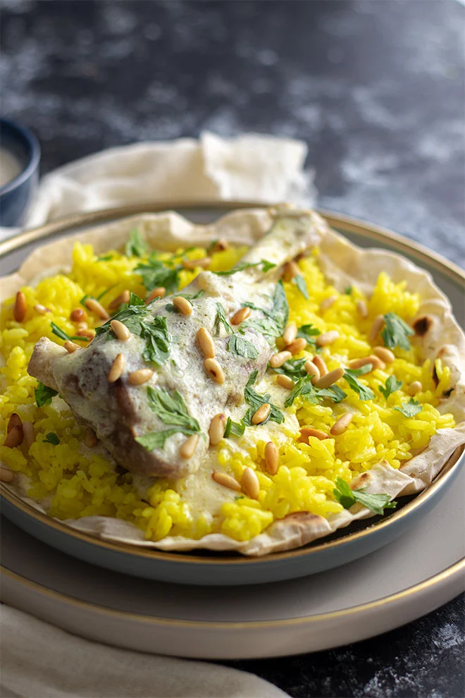

Mansaf

Description:
Mansaf is a delicious Jordanian lamb dish that you can enjoy with
flatbread, turmeric rice, and a tasty yogurt sauce.
Ingredients:
- 3 lamb shanks or 500gm of lamb
- 3 tablespoon ghee
- 3 tablespoon ghee
- 2 tablespoon corn starch
- Salt to taste
- Boiling water
- ⅛ teaspoon turmeric powder
- Spices to make lamb stock
- 1 onion cut in quarters
- 1 ½ teaspoon black peppercorns
- 5 whole cloves
- 2 bay leaves
- 2 large garlic cloves or 3
Steps:
-
In a large pan add 3 tablespoons ghee and when hot, add the lamb shanks
and fry until a few brown patches show on both sides.
-
Pour boiling water enough to cover the lamb shanks by three inches. Now
add the spices, onion, garlic, and salt.
-
Let the lamb shank cook for an hour and 40 minutes on medium-to-medium
high heat. You may need to add more boiling water while cooking the lamb
shanks.
-
Remove the lamb shanks from the stock and keep aside. Drain the stock
from the spices. Discard the spices and keep one cup from the stock on
the side.